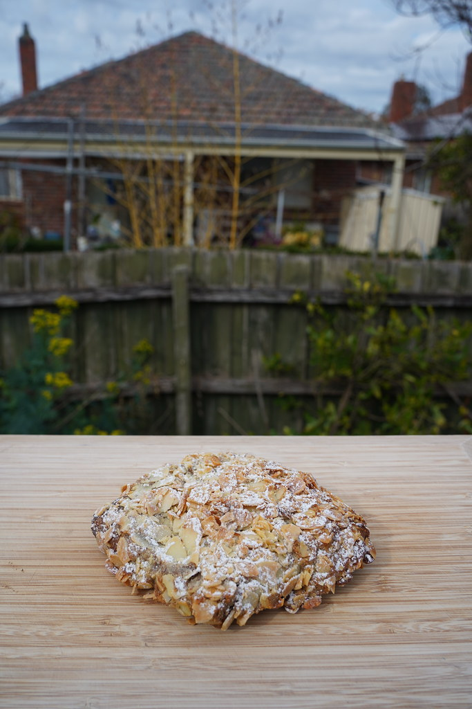

Country Sourdough
95,000 ₫
Open crumb, gentle tang and a deeply caramelised crust. The loaf we bake first every morning.
Key ingredients: stone-ground wheat, rye starter, sea salt
What comes out of the oven each day, by category. Tarts and seasonal bakes change with the month's fruit.

95,000 ₫
Open crumb, gentle tang and a deeply caramelised crust. The loaf we bake first every morning.
Key ingredients: stone-ground wheat, rye starter, sea salt

105,000 ₫
Nutty and toasty, with a soft, seeded crumb.
Oats, flax, sunflower, sesame

110,000 ₫
Dense and earthy; best sliced thin with butter.
Dark rye, toasted walnuts, honey

55,000 ₫
Shattering layers wrapped around two bars of dark chocolate.
Key ingredients: cultured butter, dark chocolate

60,000 ₫
Baked twice, filled with frangipane, finished with toasted almonds.
Butter, almonds, powdered sugar

65,000 ₫
Pistachio cream with a ribbon of chocolate inside.
Pistachio, dark chocolate, butter

85,000 ₫ / slice
Vanilla custard under strawberries and blueberries, on a crisp butter crust.
Key ingredients: strawberry, blueberry, vanilla, butter

45,000 ₫
Small tarts topped with whatever fruit is best this week.
Fruit of the week, pastry cream

75,000 ₫
A rustic open tart with jammy quince and a cornmeal crust.
Quince, cornmeal, lemon

90,000 ₫
A soft tea loaf with lemon zest and a hint of lavender. Baked through spring and early summer.
Key ingredients: lemon, dried lavender, butter

55,000 ₫
Vanilla cream, strawberries and a spoon of berry sauce. Spring.
Strawberry, vanilla, blueberry

80,000 ₫
Cinnamon apples, tart cranberries and an oat crumble. Winter.
Apple, cranberry, oats
Prices are for reference at the counter. We do not take orders or sell online.
Come at the right hour to catch the bake you love.
5:00
Overnight dough is divided and shaped into loaves.
7:00
The first bread and croissants reach the counter.
10:30
Fruit tarts and seasonal bakes are set out.
14:00
A smaller batch of loaves for the afternoon.
18:00
Or earlier, once the shelves are empty.